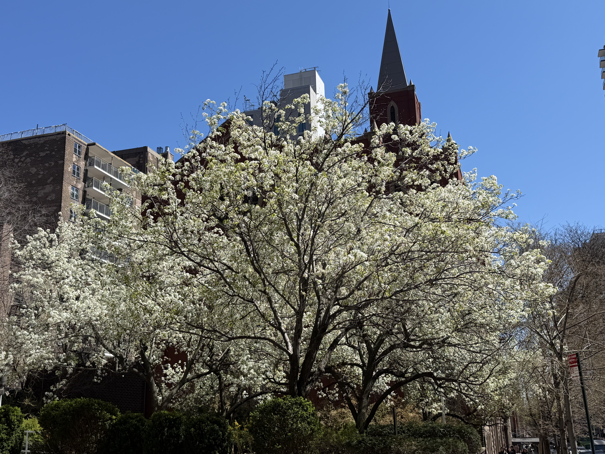
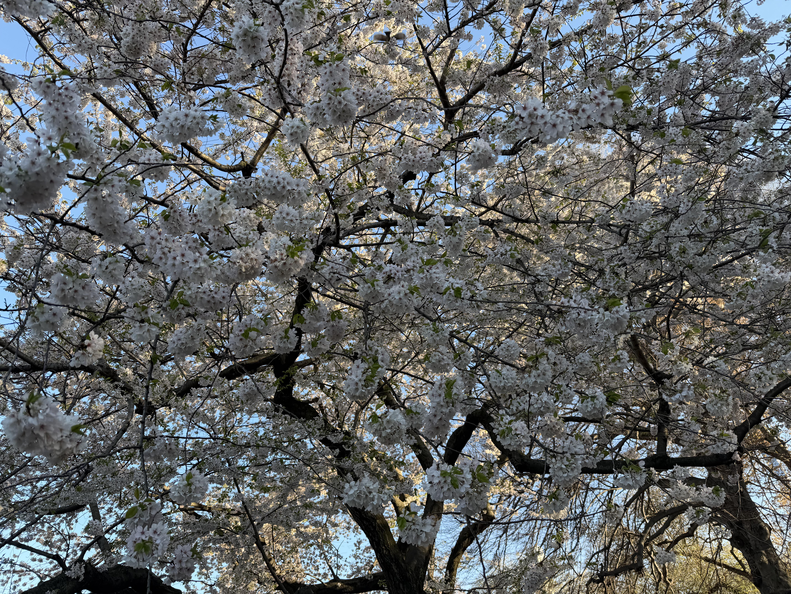

A New York Spring Story | By Jiayi Li
Every spring, Central Park transforms into a sea of white and pink blossoms. The cherry trees bloom for just a few weeks, but those weeks feel like magic. This is my favorite moment in New York City.


Photos taken in Central Park, New York City — edited in Photoshop
Close your eyes and listen to the sounds of the park in spring.
Ambient audio — recorded and edited in Audacity
Falling cherry blossom petals — interactive animation made with p5.js